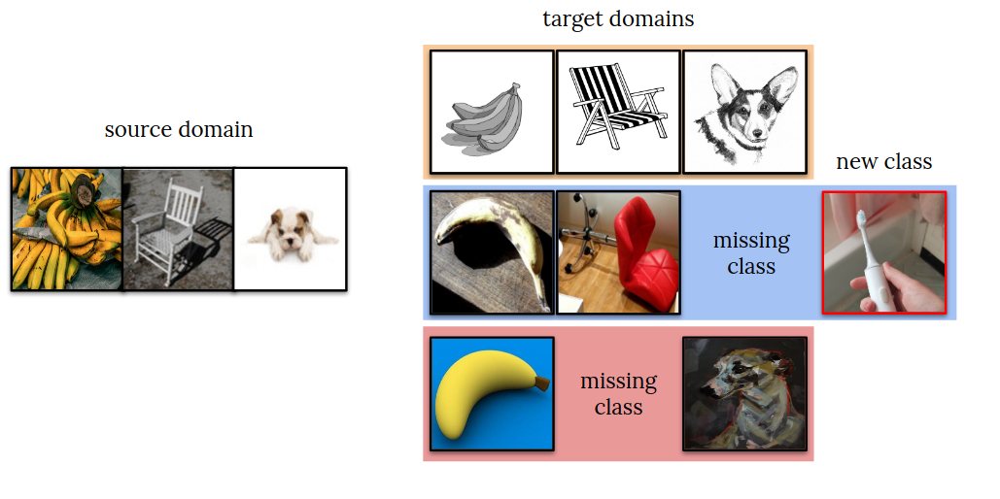
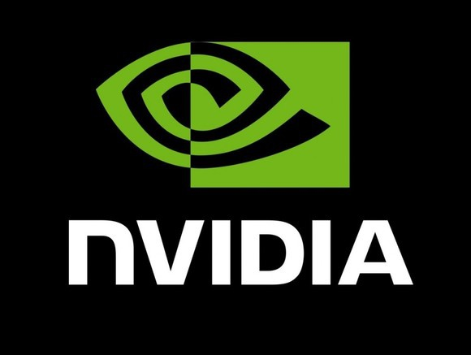

<section style="text-align: justify">
	<h1> Visual Domain Adaptation Challenge </h1>
	<h2> (VisDA-2022) </h2>
</br>

<!-- [<a href = "#news">News</a>]
[<a href = "#overview">Overview</a>]
[<a href = "#data">Data</a>]
[<a href = "https://github.com/VisionLearningGroup/visda-2019-public">Data and Code</a>]
[<a href= "#prizes">Prizes</a>]
[<a href = "#evaluation">Evaluation</a>]
[<a href = "#rules">Rules</a>]
[<a href = "#faq">FAQ</a>] 
[<a href = "https://sites.google.com/view/task-cv2019">TASK-CV Workshop</a>]
[<a href = "#organizers">Organizers</a>]
[<a href = "#sponsors">Sponsors</a>]
</br> </br> </nr>

<a name = "news"></a>

<h2 class="section-title"> Workshop </h2>

<p> Please joint our <a href="https://groups.google.com/g/visda-2021-participants">[mailing list]</a> for official announcements!</p>

We are happy to announce that the live breakout session of the VisDA-2021 NeurIPS workshop took place on Tuesday, December 7th 2021 at 20:00 GMT. Presentations, recordings, and techincal reports can be found below.

</br> </br> <b style="font-size: 20px;"> Leaderboard </b> </br> </br>

<table style="width:100%" class="table">
  <tr class="active">
    <th width='3%'>#</th>
    <th width='25%'>Team Name</th>
    <th>Affiliation</th> 
    <th width='4%'>ACC / AUROC</th>
  </tr>
  <tr>
    <td> 1 </td>
	  <td>babychick </br> <a href="https://www.youtube.com/watch?v=6S5woHLSqpQ&t=2124s">[video]</a> <a href="https://ai.bu.edu/visda-2021/assets/pdf/Burhan_Slides.pdf">[slides]</a> <a href="https://ai.bu.edu/visda-2021/assets/pdf/Burhan_Report.pdf">[pdf]</a> </td>
<td>Shirley Robotics </br> <i>Burhan Ul Tayyab, Nicholas Chua</i> </td> 
    <td>56.29 / 69.79</td>
  </tr>
  <tr>
    <td> 2 </td>
	  <td> chamorajg </br> <a href="https://www.youtube.com/watch?v=6S5woHLSqpQ&t=1372s">[video]</a> <a href="https://ai.bu.edu/visda-2021/assets/pdf/Chandramouli_Slides.pdf">[slides]</a> <a href="https://ai.bu.edu/visda-2021/assets/pdf/Chandramouli_Report.pdf">[pdf]</a> </td>
<td>- </br> <i>Chandramouli Rajagopalan</i> </td> 
    <td>48.49 / 76.86</td>
  </tr>
  <tr>
    <td> 3 </td>
	  <td> liaohaojin </br> <a href="https://www.youtube.com/watch?v=6S5woHLSqpQ&t=304s">[video]</a> <a href="https://arxiv.org/pdf/2110.14240.pdf">[pdf]</a> </td>
	  <td>Beijing University of Posts and Telecommunications </br> <i>Haojin Liao, Xiaolin Song, Sicheng Zhao, Shanghang Zhang, Xiangyu Yue, Xingxu Yao, Yueming Zhang, Tengfei Xing, Pengfei Xu, Qiang Wang</i> </td> 
    <td>48.49 / 70.8</td>
  </tr>
</table>

<b style="font-size: 20px;"> Recordings of Invited Talks </b> </br> </br>
<ul>
	<li> <i>Haojin Liao</i>: <b>3rd Place</b> <a href="https://www.youtube.com/watch?v=6S5woHLSqpQ&t=304s">[video]</a> </li>
	<li> <i>Chandramouli Rajagopalan</i>: <b>2nd Place</b> <a href="https://www.youtube.com/watch?v=6S5woHLSqpQ&t=1372s">[video]</a> </li>
	<li> <i>Burhan Ul Tayyab</i>: <b>1st Place</b> <a href="https://www.youtube.com/watch?v=6S5woHLSqpQ&t=2124s">[video]</a> <a href="https://https://ai.bu.edu/visda-2021/assets/pdf/Burhan_Slides.pdf">[slides]</a> <a href="https://ai.bu.edu/visda-2021/assets/pdf/Burhan_Report.pdf">[pdf]</a> </li> -->
<!-- <li> "Not All Networks Are Born Equal for Robustness" by <i>Cihang Xie</i> <a href="https://www.youtube.com/watch?v=6S5woHLSqpQ&t=3616s">[video]</a> </li>
<li> "Natural Corruption Robustness: Corruptions, Augmentations and Representations" by <i>Saining Xie</i> <a href="https://www.youtube.com/watch?v=6S5woHLSqpQ&t=4898s">[video]</a> </li>
<li> "Challenges in Deep Learning: Applications to Real-world Ecological Datasets" by <i>Zhongqi Miao</i> <a href="https://www.youtube.com/watch?v=6S5woHLSqpQ&t=6260s">[video]</a> </li>
</ul>

</br></br> -->

<!-- <h2 class="section-title"> Overview </h2>
<a name = "overview"></a>

<p> Progress in machine learning is typically measured by training and testing a model on the same distribution of data, i.e., the same domain. However, in real-world applications, models often encounter out-of-distribution data, such as novel camera viewpoints, backgrounds or image quality. The Visual Domain Adaptation (VisDA) challenge tests computer vision models’ ability to generalize and adapt to novel target distributions by measuring accuracy on out-of-distribution data. </p>
<p>The 2021 VisDA competition is our 5th time holding the challenge! <a href="http://ai.bu.edu/visda-2017/">[2017]</a>, <a href="http://ai.bu.edu/visda-2018/">[2018]</a>, <a href="http://ai.bu.edu/visda-2019/">[2019]</a>, <a href="http://ai.bu.edu/visda-2020/">[2020]</a>. This year, we invite methods that can adapt to novel test distributions in an open-world setting. Teams will be given labeled source data from ImageNet and unlabeled target data from a different target distribution. In addition to input distribution shift, the target data may also have missing and/or novel classes as in the Universal Domain Adaptation (UniDA) setting <a href="https://arxiv.org/abs/2104.03344">[1]</a>. Successful approaches will improve classification accuracy of known categories while learning to deal with missing and/or unknown categories.</p>

<p> <b> Announcements: </b>
<ul>
	<li> <b> June 23rd: </b> the official devkit and with data urls are released on <a href="https://github.com/VisionLearningGroup/visda21-dev">[github]</a>. </li>
	<li> <b> July 7th: </b> the evaluation server and the leaderboard are up on <a href="https://competitions.codalab.org/competitions/33396">[codalab]</a>
	<li> <b> July 26th: </b> the technical report describing the challenge is avaliable on <a href="https://arxiv.org/abs/2107.11011">[arxiv]</a>.
	<li> <b> July 28th: </b> the <a href="#prizes">[prize fund]</a> is finalized
	<li> <b> Aug 10th: </b> the <a href="#rules">[rules]</a> regarding ensembling and energy efficiency are updated.
	<li> <b> Sept 30th: </b> <a href="#data">[test data]</a> and an example submission are released, test leaderboard is live.
</ul>
</p> -->

<!-- <figure>

</figure>

<a name = "data"></a>
<h2 class="section-title"> Data </h2>
<ul>
	<li><b>Training set:</b> images and object labels from the standard <a href="https://image-net.org/download.php">ImageNet 1000-class</a> training dataset. No other training data is permitted, but data augmentation is allowed (see rules).
</li>
<li><b>Development set:</b> images and labels sampled from <a href="https://arxiv.org/abs/1903.12261">ImageNet-C(orruptions)</a>,  <a href="https://arxiv.org/abs/2006.16241">ImageNet-R(enditions)</a> and <a href="https://objectnet.dev/objectnet-a-large-scale-bias-controlled-dataset-for-pushing-the-limits-of-object-recognition-models.pdf">ObjectNet</a>. The dev set can be used for model development, but cannot be used to train the final submitted model, only to validate it to tune hyperparameters. The dev domain contains some (but not necessarily all) source classes and some novel classes.</li>
<li>
	<b>Test set</b>: similar to the development set but with a different input distribution and category composition. No labels are released for the test set. Download links: <a href="http://csr.bu.edu/ftp/visda/2021/test_data.zip">[test images], <a href="http://csr.bu.edu/ftp/visda/2021/test_example_submission.zip">[example submission]</a> with correct file order for the <a href="https://competitions.codalab.org/competitions/33396#results">[test leaderboard]</a>.
</li>
</ul>

See the <a href="https://github.com/VisionLearningGroup/visda21-dev">dev-kit</a> for details. If you use data, code or its derivatives, please consider citing our tech report avaliable on <a href="https://arxiv.org/abs/2107.11011">arxiv</a>:
</p> -->

<!-- <pre style="white-space: pre-wrap; word-break: keep-all;"><code>@misc{visda2021,
      title={VisDA-2021 Competition Universal Domain Adaptation to Improve Performance on Out-of-Distribution Data}, 
      author={Dina Bashkirova and Dan Hendrycks and Donghyun Kim and Samarth Mishra and Kate Saenko and Kuniaki Saito and Piotr Teterwak and Ben Usman},
      year={2021},
      eprint={2107.11011},
      archivePrefix={arXiv},
      primaryClass={cs.LG}
}</code></pre> -->

<!-- </br>
</br>

<a name = "prizes"></a>
<h2 class="section-title"> Prizes </h2>

<p> The top three teams will receive pre-paid VISA gift cards: $2000 for the 1st place, $500 for 2nd and 3rd. </p> </br>

<a name = "evaluation"></a>
<h2 class="section-title"> Evaluation </h2>

We will use CodaLab to evaluate submissions and maintain a leaderboard. 

A team’s score on the leaderboard will be determined using a combination of two metrics: classification accuracy (ACC) and area under the ROC curve (AUC). The accuracy is computed on the known (inlier) categories only. The AUC measures unknown (outlier) category detection and is the area under the ROC curve computed by thresholding a score that represents how likely the input is to be an unknown class.

The detailed instructions and a development kit with specific details on submission formatting and computing the evaluation metrics can be found in the official <a href="https://github.com/VisionLearningGroup/visda21-dev">[github repo]</a>. The evaluation server and the leaderboard are live <a href="https://competitions.codalab.org/competitions/33396">[at codalab]</a>.

</br>
</br> -->

<!-- <a name = "rules"></a>
<h2 class="section-title"> Rules </h2>

The VisDA challenge tests adaptation and model transfer, so the rules are different from most other challenges. Please read them carefully. </br> </br> 
<ul>
<li>Supervised Training: Teams may only submit test results of models trained on the source domain data. To ensure equal comparison, we do not allow training on any other external data or any form of manual data labeling.</li>
<li>Unsupervised training: Models can be adapted (trained) on the test data in an unsupervised way, i.e. without labels.</li>
<li>Source-only Models: The performance of a domain adaptation algorithm greatly depends on the baseline performance of the model trained only on source data. For example, ResNet-50 will work better than AlexNet. We ask that teams submit two sets of results: 1) predictions obtained only with the source-trained model, and 2) predictions obtained with the adapted model. Note that the source-only performance <b>will not</b> affect the ranking. See the development kit for submission formatting details.</li>
<li>Leaderboard: The main leaderboard for each competition track will show results of adapted models and will be used to determine the final team ranks. We compute the full ranking for each metric and take the average over rankings, and break ties using ACC. For example, if Alice is 1st in terms of ACC and 3rd in terms of AUC (2.0 average ranking), and Bob is 2nd in both (2.0 average ranking), and Carol is 2nd in ACC and 3rd in AUC ranking (2.5 average ranking), then Alice and Bob have a tie, but Alice wins because her ACC raking is higher, so the final ranking is: Alice (1st), Bob (2nd), Carol (3rd). </li>
<li>Model size: To encourage improvements in universal domain adaptation, rather than general optimization or underlying model architectures, models must be limited to a total size of 100 million parameters. </li>
<li>Ensembling: Ensembling is now allowed, but each additional forward pass through a parameter will count towards the total number of parameters allowed (100M). For example, an ensemble that passes through a 50M model twice will count as 100M towards the parameter cap.</li>
<li>Pseudo-labeling: If you use an additional step (e.g. a pseudo-labeling model) for trainig, but you do not use it during inference, it does not count towards the 100M parameter limit. </li>
<li>Energy efficiency: Teams must report the total training time of the submitted model which should be reasonable (which we define as not exceeding 100 GPU days of V100 (16GB version) but contact us if unsure). Energy efficient solutions will be highlighted even if they do not finish in the top three. </li>
</ul>

</br>
</br> -->

<!-- <a name = "faq"></a>
<h2 class="section-title"> FAQ </h2>


<ul>
<li><b> Where do we download data and submit results? </b>
The submission devkit and evaluation server will be announced soon. Please sign up for our mailing list to receive email updates. </li>
	<li><b> Can we train models on data other than the source domain? </b>
No. Participants may only train their models on the official training set, i.e. the training set of  ImageNet-1K. The final submitted model may not be trained on the dev set, but its hyper-parameters may be set on the dev set. </li>
<li><b> What data can we use to tune hyper-parameters? </b>
Only the provided dev set can be used to tune hyper-parameters. Tuning hyper-parameters on other datasets disqualifies the submission. </li>
<li><b>Can we assign pseudo labels to the unlabeled data in the target domain? </b>
Yes, assigning pseudo labels is allowed as long as no human labeling is involved.
<li><b>Can we use data augmentation? </b>
Yes, except for a <a href="https://github.com/VisionLearningGroup/visda21-dev/blob/main/README.md#corruption-blacklist">[blacklist]</a>. Data augmentation techniques that modify the original training image, such as adding noise to it or cropping, are allowed. The only exception is exact corruptions used in ImageNet-C, see the <a href="https://github.com/VisionLearningGroup/visda21-dev/blob/main/README.md#corruption-blacklist">[blacklist]</a>. </li>
<li><b>Do we have to use the provided baseline models? </b>
No, these are provided for your convenience and are optional.</li>
<li><b>How many submissions can each team submit per competition track?</b>
For the validation domain, the number of submissions per team is limited to 20 upload per day and there are no restrictions on the total number of submissions. For the test domain, the number of submissions per team is limited to 1 upload per day and 5 uploads in total. Only one account per team must be used to submit results. Do not create multiple accounts for a single project to circumvent this limit, as this will result in disqualification. </li>
<li><b> Can multiple teams enter from the same research group?</b>
Yes, so long as teams do not have any overlapping members, i.e. one person can only participate in one team. </li>
<li><b> Can external data be used?</b>
No.</li>
<li><b> Are challenge participants required to reveal all the details of their methods?</b>
Yes, but only the top performing teams. To qualify to win, teams are required to include a four+ page report describing their methods and submit their code and model so that we can reproduce their results. The winners’ reports will be posted on the challenge website; open sourcing the code is optional but highly encouraged.</li>
</ul> --> 

<!-- 
<p>Introducing the 
19 VisDA Challenge! This year we are using a new <a href="http://ai.bu.edu/M3SDA/">[DomainNet dataset]</a> to promote <b>Multi-Source Domain Adaptation</b> and <b>Semi-Supervised Domain Adaptation</b> tasks. For details about last year's challenges and winning methods, see VisDA <a href = "http://ai.bu.edu/visda-2017/">[2017]</a> and <a href = "http://ai.bu.edu/visda-2018/">[2018]</a> pages.</p>

<p><b>Important Announcement:</b> in contrast with prior VisDA challenges, this year's challenge winners will be <b>required</b> to release a four-page technical report <b>and</b> code to replicate their results. See the corresponding <a href="#faq">rules</a> section for details. </p>

<ul>
    <li><b>Oct 10</b> We released the labels for the test data! Use this <a href="http://ai.bu.edu/DomainNet/">link </a>to download the dataset.</li>
    <li><b>Oct 10</b> We finalized challenge winners. Congratulations to the challenge winners!</li>
	<li><b>Sep 26</b> We extend the deadline to Sep 28th, 11:59 am EST/ Sep 28th, 3:59 pm UTC </li>
	<li><b>Sep 26</b> We updated the prize details, please check the <a href="#prizes">PRIZES</a> section for details.</li>
	<li><b>Aug 30</b> We updated the rules, please check the <a href="#rules">RULES</a> section for details.</li>
	<li><b>Aug 30</b> We have released the test data and the testing phase begins!</li>
	<li><b>Aug 8</b> Ground Truth labels for VisDA 2017 released, see <a href="https://github.com/VisionLearningGroup/taskcv-2017-public/tree/master/classification">Git Repo</a> for details</li>
	<li><b>July 3</b> Evaluation Server Online Now</li>
	<li><b>April 9</b> Registration starts</li>
</ul>

</br>


<a name = "winners"></a>
<h2 class="section-title"> Winners of VisDA-2019 challenge </h2>
<div class="summary">
<b style="font-size: 20px;"> Multi-Source Domain Adaptation </b> <a href="https://competitions.codalab.org/competitions/20256#results"> [full leaderboard]</a>
</br> </br>

<table style="width:100%" class="table">
  <tr class="active">
    <th width='3%'>#</th>
    <th width='25%'>Team Name</th>
    <th>Affiliation</th>
    <th>Score</th>
  </tr>
  <tr>
    <td> 1 </td>
    <td>VARMS</td>
	  <td>JD AI Research</td>
   		 <td> 76.0 [<a href="">slides</a>] [<a href="http://csr.bu.edu/ftp/visda/2019/tech_reports/multi-source-1st.pdf">tech report</a>]</td>
  </tr>
  <tr>
    <td> 2 </td>
    <td>denemmy</td>
    <td> Samsung AI Center Moscow</td>
    <td>71.6  [<a href="">slides</a>] [<a href="http://csr.bu.edu/ftp/visda/2019/tech_reports/multi-source-2nd.pdf">tech report</a>]</td>
  </tr>
  <tr>
    <td> 3 </td>
    <td>SCALAR</td>
    <td>Seoul National University, CV Lab<br>
        AI Laboratory, LG Electronics</td>
    <td>69.6  [<a href="">slides</a>] [<a href="http://csr.bu.edu/ftp/visda/2019/tech_reports/multi-source-3rd.pdf">tech report</a>]</td>
  </tr>
</table>
</br>

<b style="font-size: 20px;"> Semi-Supervised Domain Adaptation </b> <a href="https://competitions.codalab.org/competitions/20257#results"> [full leaderboard]</a>
</br> </br>

<table style="width:100%" class="table">
  <tr class="active">
    <th width='3%'>#</th>
    <th width='25%'>Team Name</th>
    <th>Affiliation</th>
    <th>Score</th>
  </tr>
  <tr>
    <td> 1 </td>
    <td>lunit</td>
    <td>Lunit Inc</td>
    <td>72.0 [<a href="">slides</a>] [<a href="http://csr.bu.edu/ftp/visda/2019/tech_reports/semi-supervised-1st.pdf">tech report</a>]</td>
  </tr>
  <tr>
    <td> 2 </td>
    <td>VARMS</td>
    <td>JD AI Research</td>
    <td>71.4  [<a href="">slides</a>] [<a href="http://csr.bu.edu/ftp/visda/2019/tech_reports/semi-supervised-2nd.pdf">tech report</a>]</td>
  </tr>
  <tr>
    <td> 3 </td>
    <td> denemmy </td>
    <td>Samsung AI Center Moscow</td>
    <td>71.3 [<a href="">slides</a>] [<a href="http://csr.bu.edu/ftp/visda/2019/tech_reports/semi-supervised-3rd.pdf">tech report</a>]</td>
  </tr>
</table>

</br>


<a name = "overview"></a>
<h2 class="section-title"> Overview </h2>
<div class="summary">
<p> We are pleased to announce the 2019 Visual Domain Adaptation (VisDA2019) Challenge! It is well known that the success of machine learning methods on visual recognition tasks is highly dependent on access to large labeled datasets. Unfortunately, performance often drops significantly when the model is presented with data from a new deployment domain which it did not see in training, a problem known as <i>dataset shift</i>. The VisDA challenge aims to test domain adaptation methods’ ability to transfer source knowledge and adapt it to novel target domains. </p>

</br>


<p> The competition will take place during the months of June -- September 2019, and the top performing teams will be invited to present their results at the workshop at <a href="https://sites.google.com/view/task-cv2019">ICCV 2019</a> in Seoul, South Korea. This year’s challenge includes two tracks: </p>

  <ul>
	  <li>Multi-Source Domain Adaptation</li> <li>Semi-Supervised Domain Adaptation</li>
  </ul>

<p> on a new <a href="http://ai.bu.edu/M3SDA/">[DomainNet dataset]</a>. Participants are welcome to enter in one or both tracks. </p>
</br>

<figure>


</figure>

</br>
</br>
<a name = "sponsors"></a>
<h2 class="section-title"> Sponsors </h2>


&nbsp;&nbsp;&nbsp;&nbsp;

</br>
</br>

<a name = "prizes"></a>
<h2 class="section-title"> Prizes </h2>

<p> The top three teams in each track will receive prizes:</p>

<ul>
  <li>1st place: <a href = "https://www.nvidia.com/en-us/geforce/graphics-cards/rtx-2080-ti/"> NVIDIA GeForce RTX 2080 Ti GPU </a></li>
  <li>2nd place: USD 500 Amazon Gift Card </li>
  <li>3rd place: USD 250 Amazon Gift Card </li>
</ul>

</br>

<a name = "evaluation"></a>
<h2 class="section-title"> Evaluation </h2>

<p> We will use CodaLab to evaluate submissions and maintain a leaderboard. To register for the evaluation server, please create an account on <a href = "https://competitions.codalab.org/">CodaLab</a> and and enter as a participant in one of the following competitions: </p>

<ul>
  <li><a href = "https://competitions.codalab.org/competitions/20256">Multi-Source Domain Adaptation</a></li>
  <li><a href = "https://competitions.codalab.org/competitions/20257">Semi-Supervised Domain Adaptation</a></li>
</ul>

<p>If you are working as a team, you have the option to register for one account for your team or register multiple accounts under the same team name. If you choose to use one account, please indicate the names of all of the members on your team. This can be modified in the “User Settings” tab. If your team registers for multiple accounts, please do so using the protocol explained by CodaLab <a href = "https://github.com/codalab/codalab-competitions/wiki/User_Teams">here</a>. Regardless of whether you register for one or multiple accounts, your team must adhere to the per-team submission limits (20 entries per day per team during the validation phase). </p>

<p>Please refer to the instructions in the <a href = "https://github.com/VisionLearningGroup/visda-2019-public">DevKit</a> ReadMe file for specific details on submission formatting and evaluation for the classification and segmentation challenges.</p>

</br>

<a name = "rules"></a>
<h2 class="section-title"> Rules </h2>

<p>The VisDA challenge tests adaptation and model transfer, so the rules are different than most challenges. Please read them carefully.</p>

<p><b>Supervised Training:</b> Teams may only submit test results of models trained on the source domain data. To ensure equal comparison, we also do not allow any other external training data, modifying the provided training dataset, or any form of manual data labeling. </p>

<p><b>Unsupervised training:</b> Models can be adapted (trained) on the test data in an unsupervised way, i.e. without labels.  </p>

<p><b>Source Models:</b> The performance of a domain adaptation algorithm greatly depends on the baseline performance of the model trained only on source data. We ask that teams submit two sets of results: 1) predictions obtained only with the source-trained model, and 2) predictions obtained with the adapted model. See the development kit for submission formatting details. </p>

<p><b>Leaderboard:</b>The main leaderboard for each competition track will show results of adapted models and will be used to determine the final team ranks. The expanded leaderboard will additionally show the team's source-only models, i.e. those trained only on the source domain without any adaptation. These results are useful for estimating how much the method improves upon its source-only model, but will not be used to determine team ranks. </p>
	<p><b>Rank:</b>The final rank will be determined by the overall accuracy on <i>clipart</i> and <i>painting</i> domain. You can train two separate models for <i>clipart</i> and <i>painting</i>.</p>


</br>

<a name = "faq"></a>
<h2 class="section-title"> FAQ </h2>

<ol>
<li><b>What's the training setting for unsupervised multi-source domain adaptation?</b></li>
<p>Ideally, you should train two <b>identical</b> models with the same <b>strategy/approach/hyperparameter</b> on following settings:</p>
<p>Model I: Train on labeled images in sketch_train.txt (#49,115) /real_train.txt (#122,563) /quickdraw_train.txt (#120,750) /infograph_train.txt (#37,087) +  unlabeled images in clipart_train.txt  (#34,019), Test on unlabeled  images in clipart_test.txt  (#14,814). </p>
<p>Model II: Train on labeled images in sketch_train.txt (#49,115) /real_train.txt (#122,563) /quickdraw_train.txt (#120,750) /infograph_train.txt (#37,087) +  unlabeled images in painting_train.txt (#52,867), Test on unlabeled images in painting_test.txt (#22,892). </p>

<p>The submission file should contain the predictions of model I on 14,814 testing images and the predictions of model II on 22,892 testing images. The final ranking will be determined by how many correct predictions do the submission file have within the (14,814+22,892) images.
One  submission example can be found with the following link: <a href="https://github.com/VisionLearningGroup/visda-2019-public/blob/master/multisource/submission_example/result.txt"> submission_example.txt </a></p>

<li><b>Can we train models on data other than the source domain?</b></li>
<p> Participants may elect to pre-train their models only on ImageNet. Please refer to the challenge evaluation instructions found in the <a href = "https://github.com/VisionLearningGroup/visda-2019-public">DevKit</a> for more details. </p>

<li><b>In unsupervised multi-source domain adaptation challenge, can we use testing split of the given data to tune the parameter?</b></li>
<p>No, in the training phase, only the training split can be used to train the model. In other words, utilizing the testing split from the source domains or target domain is prohibited. </p>

    <li><b>Can we assign pseudo labels to the unlabeled data in the target domain?</b></li>
<p>Yes, assigning pseudo labels is allowed as long as no human labeling is involved. </p>

<li><b>Do we have to use the provided baseline models?</b></li>
<p>No, these are provided for your convenience and are optional. </p>

<li><b>How many submissions can each team submit per competition track?</b></li>
<p>For the validation domain, the number of submissions per team is limited to 20 upload per day and there are no restrictions on total number of submissions. For the test domain, the number of submissions per team is limited to 1 upload per day and 20 uploads in total. Only one account per team must be used to submit results. Do not create multiple accounts for a single project to circumvent this limit, as this will result in disqualification. </p>

<li><b>Can multiple teams enter from the same research group?</b></li>
<p>Yes, so long as each team is comprised of different members.</p>

<li><b>Can external data be used?</b></li>
<p>The allowed training data consists of the VisDA 2019 Training set. Optional initialization of models with weights pre-trained on ImageNet is allowed and must be declared in the submission. Please see the <a href = "#rules">challenge rules</a> for more details. </p>

<li><b>Are challenge participants required to reveal all details of their methods?</b></li>
<p><b> Yes! </b> The top performing teams are required to include a four+ page write-up regarding their methods and code to reproduce their results to the claim the victory. The detailed procedure for releasing the code is to be determined. </p>

<li><b>Do participants need to adhere to TASK-CV abstract submission deadlines to participate in the challenge?</b></li>
<p>Submission of a <a href = "https://sites.google.com/view/task-cv2019">TASK-CV</a> workshop abstract is not mandatory to participate in the challenge; however, we request that any teams that wish to be considered for prizes or receive invitation to speak at the workshop submit a 4-page abstract. The top-performing teams that submit abstracts will be invited to present their approaches at the workshop. </p>

</br>
</br>

 -->
<!-- 
<a name = "sponsors"></a>
<h2 class="section-title"> Sponsors </h2>


</br>
</br> -->
<!-- 
<a name = "organizers"></a>
<h2 class="section-title"> Organizers </h2>

Kate Saenko (BU & MIT-IBM Watson AI), Kuniaki Saito (BU), Donghyun Kim (BU), Samarth Mishra (BU), Ben Usman (BU), Piotr Teterwak (BU), Dina Bashkirova (BU), Dan Hendrycks (UC Berkeley)

</br>
</br> -->
<!-- 
[1] OVANet: One-vs-All Network for Universal Domain Adaptation, Kuniaki Saito and Kate Saenko. 
<!-- <a name = "acknowledgement"></a>
<h2 class="section-title"> Acknowledgement </h2>

We thank Siddharth Mysore Sthaneshwar, Andrea Burns, Reuben Tan, Yichen Li for testing the evaluation server and the website.
</br>
 --> -->

<div height=1000px> </div>


</div><!--//summary-->
</section><!--//section-->
